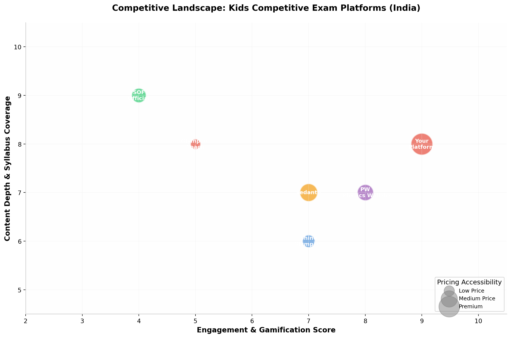

A Comprehensive Development Blueprint for an Interactive,
Gamified Learning Platform for Classes 2-5
This blueprint outlines the complete design, architecture, and implementation strategy for a highly engaging, interactive web-based platform that prepares children in Classes 2 through 5 for competitive examinations. The platform targets the rapidly growing Indian edtech market, specifically addressing the gap between traditional test preparation and modern, gamified learning experiences that children genuinely enjoy.
The core concept centers on a freemium model where users can access a limited number of free quizzes upon registration and OTP verification, while premium content is unlocked through affordable microtransactions (Rs 5-19 per quiz) or monthly subscription plans. This approach ensures accessibility for all socioeconomic segments while generating sustainable revenue to cover hosting and operational costs.
The platform covers five major examination categories: SOF International Olympiads (Mathematics, Science, English), General Aptitude & Reasoning, English Grammar, Science, and Mathematics. Each quiz is meticulously aligned with official syllabi and structured to mirror actual exam patterns, including timed tests, multiple-choice questions, and higher-order thinking sections.
What distinguishes this platform from existing competitors is its comprehensive gamification engine featuring a multi-tiered reward system (points, badges, streaks, leaderboards), animated celebrations for achievements, character avatars that level up, and a "Quiz Arena" mode where students compete in real-time. The visual design employs a warm, playful aesthetic with soft gradients, rounded corners, and child-friendly illustrations that make learning feel like play.
Technically, the platform is built on a modern, non-developer-friendly stack: Next.js 15 with React 19 for the frontend, PostgreSQL with Prisma ORM for the database, and Razorpay for payments. The entire system is designed to be deployable on Vercel with minimal DevOps knowledge, making it ideal for a solo entrepreneur using AI-assisted development tools. The architecture supports up to 10,000 concurrent users on modest infrastructure and can scale horizontally as the user base grows.
Target Age Group: 7-11 years (Classes 2-5) | Total Addressable Market: 15+ million students in India | Revenue Model: Freemium + Microtransactions + Subscriptions | Price Point: Rs 5-19 per quiz, Rs 49-199/month subscription | Break-even Target: 500 active paying users
The Indian edtech market for K-12 competitive exam preparation is experiencing unprecedented growth, driven by increasing parental awareness about Olympiad examinations and the desire for structured, affordable practice material. The target audience consists of three interconnected segments, each with distinct needs and decision-making authority.
Primary Users (Children, Ages 7-11): These are students in Classes 2 through 5 who are either already participating in or preparing to participate in competitive examinations. Their key motivations include earning medals and certificates, outperforming peers, satisfying parental expectations, and increasingly, genuine enjoyment of challenge-based learning. Children in this age group have an attention span of 15-25 minutes for focused activities, respond strongly to visual feedback and rewards, and are highly influenced by peer comparison and social recognition. They expect instant gratification, colorful interfaces, and game-like experiences.
Decision Makers (Parents): Parents, particularly mothers aged 28-42, are the primary economic decision-makers. Their concerns center on affordability (preferring micro-payments over large upfront commitments), content quality alignment with actual exam patterns, progress visibility, and data safety for their children. They are willing to spend Rs 200-500 monthly on educational tools if they can see measurable improvement in their child's performance. Parents frequently search for terms like "free Olympiad questions for Class 3," "NSO sample papers," and "best app for Olympiad preparation."
Influencers (Teachers & Schools): School teachers, particularly those designated as Olympiad coordinators, influence platform adoption at the institutional level. They seek bulk pricing, progress reports for entire classes, and content that directly supplements their teaching curriculum. School partnerships represent a high-value, low-acquisition-cost distribution channel.
The competitive landscape for children's competitive exam preparation in India spans multiple categories, from official Olympiad bodies to large edtech conglomerates. Understanding each competitor's positioning reveals strategic opportunities.

| Competitor | Strengths | Weaknesses | Our Opportunity |
|---|---|---|---|
| Shine Olympiad | Clean UI, good subject coverage, free content | Limited gamification, no payment integration, basic progress tracking | Superior engagement through gamification; monetization infrastructure |
| Olympiad Coach | Official SOF alignment, large question bank | Cluttered interface, no user accounts, ad-heavy | Modern UX with authentication and personalized experiences |
| SOF Official | Authoritative content, brand trust | PDF-only format, no interactivity, no analytics | Interactive digital format with instant feedback and progress tracking |
| PW (Physics Wallah) | Strong brand, comprehensive content, affordable pricing | Focuses on older students (Classes 6-12), limited gamification for younger kids | Focused targeting of Classes 2-5 with age-appropriate game mechanics |
| Vedantu | Live classes, strong teacher network | Expensive, heavy focus on live sessions rather than self-paced practice | Self-paced, affordable micro-transaction model for practice-focused learners |
| Byju's | Massive brand recognition, animated content | Very expensive, broad focus dilutes competitive exam specificity, financial instability | Niche focus on competitive exams at fraction of the price |
The market opportunity is substantiated by several converging trends. The Science Olympiad Foundation alone conducts examinations for over 50,000 schools across 1,400+ cities, with participation exceeding 5 million students annually [^25^]. When including other Olympiad bodies (Unified Council, SilverZone, EduHeal), the total addressable market expands to approximately 8-10 million annual participants. Beyond Olympiads, the general aptitude and reasoning test market for primary school children adds another 5+ million potential users.
The critical insight is that most existing platforms fall into two extremes: they are either completely free with no sustainability model (and therefore limited features and maintenance), or they are expensive comprehensive courses that price out the majority of Indian families. The microtransaction model - where parents pay Rs 5-19 for individual quizzes - occupies a sweet spot that no major competitor currently targets effectively. This price point is lower than a chocolate bar, removing virtually all purchase friction while accumulating to meaningful revenue at scale.
The average Indian middle-class family spends Rs 3,000-8,000 annually on private tutoring and educational materials. A platform charging Rs 99-199/month represents only 3-6% of this budget while providing specialized, exam-focused practice that most tutors cannot match in quality or convenience.
The platform's value proposition rests on three pillars that address the most significant pain points in children's competitive exam preparation. These pillars are designed to work synergistically, creating an ecosystem where each element reinforces the others.
Pillar 1: Exam-Aligned Practice: Every quiz is structured to match the exact format, timing, and difficulty distribution of actual Olympiad examinations. For SOF Olympiads, this means replicating the section-wise breakdown (Logical Reasoning, Subject Knowledge, Everyday Mathematics, Achievers Section), the exact number of questions per section, and the marks allocation. This alignment ensures that when a child sits for the actual exam, the format feels familiar and comfortable rather than intimidating. Questions are sourced and verified against official syllabi published by SOF for NSO, IMO, and IEO examinations.
Pillar 2: Engagement Through Gamification: Traditional test preparation is boring for 7-11 year olds. The platform transforms practice into play through a comprehensive reward system. Children earn "Brain Points" for every correct answer, receive animated badges for achievements ("Speed Demon" for fast completion, "Perfect Score" for 100%, "Streak Master" for consecutive daily practice), see their names climb leaderboards, and collect virtual rewards that can be displayed on their profile. Research in educational psychology confirms that well-designed gamification increases engagement by 40-60% and improves knowledge retention by 25-30% compared to traditional methods [^29^].
Pillar 3: Accessibility & Affordability: The freemium model ensures that every child can access basic practice regardless of their family's financial situation. The free tier includes 2 full quizzes per subject per month with complete feedback. Premium access through microtransactions (Rs 5-19 per quiz) or subscriptions (Rs 49-199/month) unlocks unlimited quizzes, detailed analytics, certificates, and competitive leaderboards. This pricing is designed to be lower than any comparable service while still generating sustainable revenue.
The platform differentiates from existing solutions through ten specific features that no single competitor currently offers in combination. These differentiators are organized by category for clarity.
| Feature | Our Platform | Shine Olympiad | Olympiad Coach | PW/Vedantu |
|---|---|---|---|---|
| Microtransaction pricing (Rs 5-19/quiz) | Yes | No | No | No |
| Gamified points & badge system | Advanced | Basic | No | Basic |
| Live leaderboards (school/city/national) | Yes | No | No | Limited |
| Auto-generated completion certificates | PDF + Shareable | No | No | No |
| Progress tracking with parent dashboard | Detailed | Basic | No | Moderate |
| OTP-verified child-safe accounts | Yes | No | No | Email only |
| Subject coverage (5 categories) | Complete | 3 categories | 3 categories | 2 categories |
| Timed exam simulation | Exact match | Basic timer | Basic timer | No |
| Adaptive difficulty scaling | Yes | No | No | Limited |
| Printable practice worksheets | Yes | No | PDF only | No |
The platform is conceptualized as a Progressive Web App (PWA) that functions equally well on desktop computers, tablets, and mobile phones. This choice eliminates the need for separate native app development while providing an app-like experience including offline capability, home screen installation, and push notifications.
The user experience follows a carefully designed funnel. A visitor lands on a colorful, animated homepage that immediately showcases the platform's personality. They select their class (2, 3, 4, or 5) and subject of interest, browse available quizzes with preview information (topic coverage, difficulty, number of questions, price), and can either attempt a free trial quiz or register to unlock more content. Registration requires minimal information (name, class, parent's phone number) followed by OTP verification. Once verified, users receive 2 free quizzes and can purchase additional quizzes or subscribe for unlimited access.
The quiz interface itself is the heart of the experience. Questions appear one at a time with a visible countdown timer styled as a progress ring. Multiple choice options are presented as large, tappable cards with instant visual feedback (green for correct, red for incorrect with the correct answer highlighted). Between questions, brief animated transitions maintain engagement. Upon completion, users see a comprehensive results screen with their score, time taken, topic-wise breakdown, correct/incorrect answer review, points earned, and any badges awarded. High scorers can generate a shareable certificate and see their ranking on the leaderboard.
The platform's content is meticulously mapped to the official syllabi published by the Science Olympiad Foundation (SOF) for the National Science Olympiad (NSO), International Mathematics Olympiad (IMO), and International English Olympiad (IEO). This alignment is critical for ensuring that practice on the platform directly translates to improved performance in actual examinations. The syllabi follow the CBSE, ICSE/ISC, and various State Board guidelines [^25^][^74^].
Each Olympiad follows a consistent four-section structure for Classes 1-4 (35 questions, 40 marks, 60 minutes) and Classes 5-12 (50 questions, 60 marks, 60 minutes). The Level 1 exam draws 60% of questions from the current class syllabus and 40% from the previous class syllabus, while Level 2 focuses exclusively on the current class syllabus. The Achievers Section in each exam contains Higher Order Thinking Questions designed to test conceptual depth rather than rote memorization.
The following tables provide the detailed syllabus coverage for each subject and class, extracted and consolidated from official SOF publications. This information forms the content backbone of the platform's question bank.
| Class | Logical Reasoning (Section 1) | Science (Section 2) |
|---|---|---|
| Class 2 | Patterns, Odd One Out, Measuring Units, Geometrical Shapes, Analogy, Ranking Test, Grouping of Figures, Embedded Figures, Coding-Decoding | Plants, Animals, Human Body, Food, Housing and Clothing, Family and Festivals, Good Habits and Safety Rules, Transport and Communication, Air, Water and Rocks, Earth and Universe |
| Class 3 | Patterns, Analogy and Classification, Alphabet Test, Coding-Decoding, Ranking Test, Grouping of Figures and Figure Matrix, Mirror Images, Geometrical Shapes, Embedded Figures, Possible Combinations | Plants and Animals, Birds, Food, Housing, Clothing and Occupation, Transport, Communication and Safety Rules, Human Body, Earth and Universe, Matter and Materials, Light, Sound and Force, Our Environment |
| Class 4 | Patterns, Alphabet Test, Coding-Decoding, Ranking Test, Mirror Images, Geometrical Shapes and Solids, Embedded Figures, Direction Sense Test, Possible Combinations, Analogy and Classification | Plants, Animals, Food and Digestion, Human Needs, Matter and Materials, Force, Work and Energy, Our Environment, Earth and Universe |
| Class 5 | Patterns, Analogy and Classification, Geometrical Shapes, Mirror and Water Images, Direction Sense Test, Ranking Test, Alphabet Test, Logical Sequence of Words, Puzzle Test, Coding-Decoding | Animals, Human Body and Health, Plants, Natural Resources and Indian Heritage, Pollution and Calamities, Earth and Universe, Matter and Materials, Force and Energy |
| Class | Logical Reasoning (Section 1) | Mathematical Reasoning (Section 2) |
|---|---|---|
| Class 2 | Patterns, Analogy, Classification, Geometrical Shapes, Mirror and Water Images, Direction Sense Test, Ranking Test, Alphabet Test, Logical Sequence | Numerals and Number Names, Computation Operations, Fractions, Measurement of Length/Weight/Capacity, Time, Temperature, Money, Conversions, Geometrical Shapes |
| Class 3 | Patterns, Analogy, Classification, Alphabet Test, Coding-Decoding, Ranking Test, Grouping of Figures, Mirror Images, Geometrical Shapes, Embedded Figures | Number Sense (4-5 digit numbers), Computation Operations, Fractions, Money, Length, Weight, Capacity, Time, Geometry, Data Handling |
| Class 4 | Patterns, Alphabet Test, Coding-Decoding, Ranking Test, Mirror Images, Geometrical Shapes, Embedded Figures, Direction Sense Test, Analogy and Classification | Number Sense (5-digit numbers), Computation Operations, Factors and Multiples, Fractions and Decimals, Measurement, Geometry, Data Handling |
| Class 5 | Patterns, Analogy, Classification, Geometrical Shapes, Mirror and Water Images, Direction Sense Test, Ranking Test, Alphabet Test, Puzzle Test, Coding-Decoding | Number Sense (7-8 digit numbers), Computation Operations, Fractions and Decimals, Measurement of Length/Weight/Capacity/Time/Temperature/Money, Conversions, Angles, Perimeter and Area, Symmetry, Data Handling |
| Class | Word & Structure Knowledge (Section 1) | Reading (Section 2) | Spoken & Written Expression (Section 3) |
|---|---|---|---|
| Class 2 | Collocations, Spellings, Synonyms, Antonyms, Nouns, Pronouns, Verbs, Adverbs, Adjectives, Articles, Prepositions, Conjunctions, Contractions, Word Order, Punctuation, Simple Tenses | Retrieve information from stories, short dialogues; understand messages and invitations | Thanking, greeting, asking for permission, introducing oneself |
| Class 3 | Homophones, Collocations, Spellings, Synonyms and Antonyms, Gender, Number, Proverbs, One Word, Nouns, Pronouns, Verbs, Adverbs, Adjectives, Articles, Prepositions, Simple Tenses, Conjunctions, Punctuation | Retrieve information from stories and anecdotes; understand pictures, timetables, messages | Apology, greeting, introduction, request |
| Class 4 | Collocations, Spellings, Gender, Singular-Plural, One Word Substitution, Synonyms, Antonyms, Nouns, Pronouns, Verbs, Adverbs, Adjectives, Contractions, Articles, Prepositions, Conjunctions, Tenses, Punctuation, Jumbled Words | Retrieve information from stories and anecdotes; understand pictures, timetables, messages | Apology, greeting, introduction, request |
| Class 5 | Spellings, Collocations, Idioms, Homonyms and Homophones, Synonyms, Antonyms, Nouns, Pronouns, Verbs and Phrasal Verbs, Adverbs, Adjectives, Articles, Prepositions, Punctuation, Tenses, Active-Passive Voice, Reported Speech | Retrieve information from news headlines, messages, letters; understand news reports, timetables, menu cards, dialogues | Requests, refusals, apologies, use of conjunctions |
The question bank is architected as a structured repository where each question is tagged with multiple metadata attributes enabling flexible quiz generation, adaptive difficulty, and detailed analytics. The platform targets an initial question bank of 5,000+ questions across all subjects and classes, scaling to 25,000+ within the first year.
Each question in the database carries the following metadata: subject (NSO/IMO/IEO/Aptitude/Reasoning/Grammar), class grade (2/3/4/5), topic (mapped to syllabus sub-topics), difficulty level (Easy/Medium/Hard), question type (multiple choice single answer, multiple choice multiple answers, true/false, fill in the blanks), marks value, estimated time to solve, image assets (if applicable), explanation text, source reference, usage count, and average correctness rate from past attempts.
The quiz generation engine uses this metadata to assemble balanced quizzes that match official exam patterns. For example, a Class 5 NSO quiz would automatically select questions following the exact distribution: 10 Logical Reasoning questions (1 mark each), 35 Science questions (1 mark each), and 5 Achievers Section questions (3 marks each), for a total of 50 questions and 60 marks to be completed in 60 minutes. The engine ensures topic coverage across all syllabus areas and can weight question selection toward topics where the user has shown weakness.
Phase 1 (Launch): 5,000 questions covering NSO, IMO, IEO for Classes 2-5 (approximately 400-500 questions per subject-class combination). Phase 2 (Month 3): Add General Aptitude and Reasoning (2,000 questions). Phase 3 (Month 6): Add English Grammar and additional Science/Math practice (3,000 questions). Phase 4 (Month 12): Expand to 25,000+ questions with user-generated content moderation.